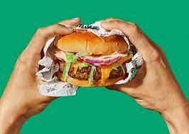
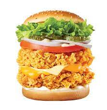

햄버거 종류
- 소고기 버거
- 치킨 버거
- 터키 버거
- 새우 버거
- 기타 햄버거

1. 소고기 버거
하크스테이크에서 유래한 햄버그 스테이크가 햄버거로 재탄생된 과정에서 생겨났으며, 고기를 갈아서 햄버그 스테이크를 만드는 것과 마찬가지로 패티 역시 고기를 갈아서 만든다. 갈지 않은 생고기는 제아무리 연하다 하더라도 햄버거 빵은 물론 다른 식재료에 비해 잘 부스러지지 않아 먹기 불편하기 때문이다. 다만 치킨 패티 같은 경우 잘 부스러지는 닭고기의 특성상 갈지 않은 고기를 사용할 수 있다. 또 고기를 너무 잘게 '갈아서' 만들면 부드러운 대신 씹는 맛과 육즙이 부족해지므로 적절하게 다지는 것이 중요하다.[2]
고급 패티는 그냥 먹어도 뛰어난 맛이 나나, 저급 패티는 소스에 범벅을 해도 별로 맛이 없다. 대형 브랜드 햄버거가 썩어도 준치는 되는 이유 중 하나. 혼합육 패티를 쓰는 버거는 흔히 돈 주고 쓰레기 먹는 기분이 드는 맛을 낸다. 버거킹의 3,900원 세트메뉴가 닭고기+돼지고기 혼육 패티를 쓰는데, 소스로 범벅을 한데다 가격이 워낙 저렴하다보니 찾는 사람도 많지만 못 먹겠다고 말하는 이들도 많다.
저렴한 가격대의 육류가공품의 맛은 혼합되지 않은 단일육의 비율이 몇 %냐에 따라서 갈린다. 소고기와 돼지고기를 섞으면 소고기만 썼을 때보다는 육즙이 풍부해지고, 돼지고기만 사용했을 때보다는 풍미가 좋고 깔끔한데, 이상하게 닭고기와 돼지고기는 하나만 가지고 뭔가를 만들면 꽤 맛있는 게 나오는데, 섞으면 맛이 떨어진다. 식감은 부쳐먹는 핑크소시지 수준으로 떨어지고 고기의 맛은 덜 난다. 닭고기 특성상 향 자체가 옅고 갈아버리면 식감이 나쁘기 때문에 갈아서 섞으면 이상해지는 것. 고기를 넣었는데 결과물은 밀가루를 넣은 것과 유사해지는 조합이라, 맛과 가격 양면에서 득이 없다. 혼합육에 쓰이는 고기 부위는 돈 주고 먹느니 버리는 게 나은 쓰레기에 가까운 것이 많고, 들어간 고기만큼 밀가루나 전분을 때려박은 후 인공향을 집어넣은 것이 대부분이긴 하지만...먹을 때 후회하기 싫다면 햄이나 소시지는 육류함량이 적어도 80% 이상이고 한 종류의 육류만 들어간 것을 사자. 이 부분은 주로 비엔나 또는 프레스햄을 먹다보면 크게 느껴진다.
참고로 다진 고기가 아닌 통살 고기를 그대로 써서 만든 것은 패티가 아니다. 하지만 편의상 햄버거에 들어가는 고기는 모두 패티라고 부르는 이들이 많다.[3]

2. 치킨 버거
개요 매콤한 신선냉장 치킨 통가슴살과 화이트 스위트 칠리소스, 양상추, 토마토와 피클을 먹음직스럽게 얹은 정통치킨버거 파파이스 에서 파는 햄버거. 파파이스 샌드위치 중 메인메뉴. 실제로도 신문 기사에서도 빅맥, 랏츠버거, 와퍼, 징거버거등과 비교된다. 보통 생각하는 버거의 구성에 충실하다. 양상추와 매콤한 닭가슴살에 부드러운 화이트 칠리소스가 버무려져 있고 피클도 있다. 파파이스에서 가장 평이한 가격대다. 그렇지만 그만큼 매장에 따른 맛